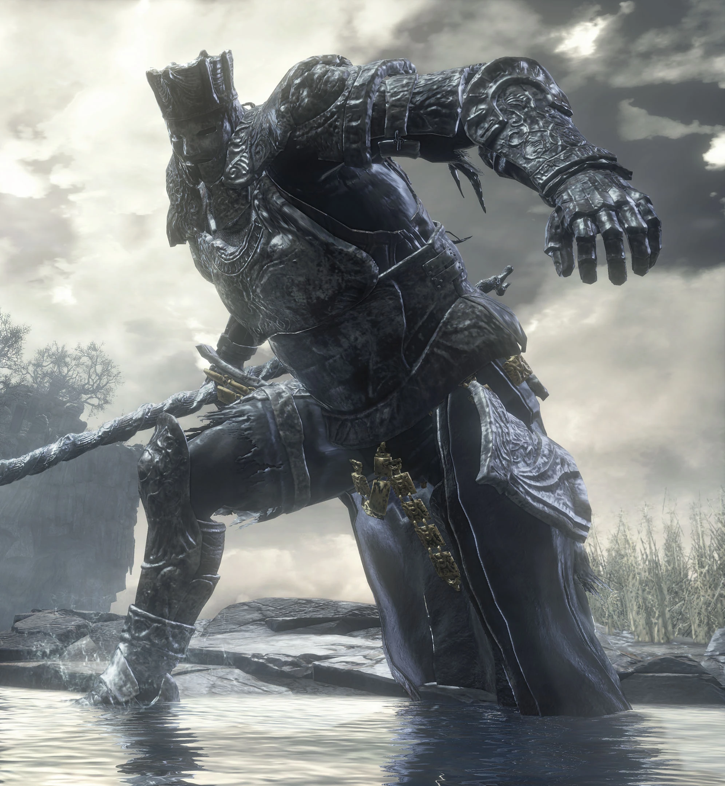

Iudex Gundyr |
||
|---|---|---|
|
 |
Iudex Gundyr é o primeiro boss encontrado em Dark Souls 3, encontrado na primeira área do jogo ele serve como um tutorial para as mecánicas utilizadas no jogo e um tuorial para como seram os bosses. Gundyr é uma criatura alta e humanoide com uma armadura pesada e uma grande alabarda como arma, ao ser encontrado ele tera uma espada espiral enfincada ao seu peito. Durante a sua luta, ao ser levado a um certo ponto de sua vida, uma grande massa gosmeta sai de dentro dele, conferindo ataques novos e dano aumentado. Alem de ser o primeiro boss do jogo ele é o primeiro boss obrigatório, jogadores terão de passar por ele para prosseguir
"Um campião escolhido para testar e julgar aqueles que são dignos de acenderem a primeira chama"
Gundyr é encontrado no cemetério das cinzas, a primeira área do jogo, bloqueando passagem para o santuário do elo de fogo.
Para Gundyr, é impossível pedir ajuda a outros jogadores, considerando que ele é parte do tutorial do jogo.
Gundyr é fraco a dano de fogo, gelo e elétrico.
Ele pode ter sua postura quebrada, mas isso não permite um ataque especial, ao invés disso, cada ataque dará dano extra em Gundyr.
Ataques de Gundyr podem ser aparados.
{kind=link}